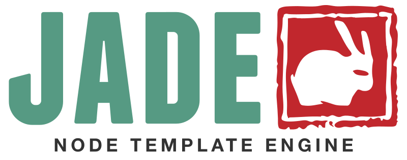

I am a development workflow designed to combine three amazing tools, Jade, Sass and Gulp. Speed up your development process by leveraging the compiling power of these dynamos! Links above to fork this repo along with tutorials about each language.
Responsive Native JS Slider